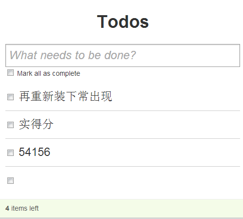
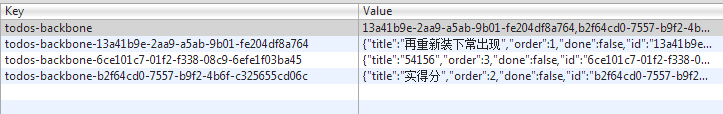

前言
昨天我们一起学习了backbone的model，我个人对backbone的熟悉程度提高了，但是也发现一个严重的问题！！！
我平时压根没有用到model这块的东西，事实上我只用到了view，所以昨天学习的效果其实不佳，比起上次对underscore的熟悉，对zepto的熟悉，甚至对fastclick的熟悉
学习效率打了折扣，而且一些地方不明不白，所以，我今天决定将速度放慢，我们学习collection时候先做小例子，争取覆盖关键点，然后再从源码学习，于是开始吧
集合-Collection
实例解析
首先回到我们熟悉的官方例子，其中关于集合的叙述不多，官方的例子流程如下：
① 定义模型Model
这个model很简单，基本没有干什么有意义的事情，验证的事情都没有干，说到这里有一点需要注意：
我们在实际项目中，无论是使用backbone的model或者自己实现了model
都一定要提供validate验证机制，或者验证方法，这个可以让我们的程序更加稳健！
举个例子来说，我们的程序中model会读取来自服务器端的数据，正常情况下是这样的：
{ data1: [{name: '叶小钗', ......},], data2: ...... }
但是如果有一天我们的服务器出错了，他会返回错误的数据，或者空数据，而前端的代码没有做容错处理的话，这个数据就会被写入localstorage
{
data1: {},
data2: {}
}
这个json对象当然不为空，因为我们model的机制是为空时候会拉取数据，不为空则直接读取localstorage数据，但是事实上，在业务逻辑上这个数据是为空的！！！
所以，我们的程序表现上就是列表为空，读不到数据了，这可以引发很不好的问题
但是如果我们这个model有一个validate方法用于验证model的正确性的话，就可以避免这个问题了！
以我们官方的例子来说，他这个Todo的model事实上应该验证title为空的情况，但他没有这么做，他将数据的验证放到了view里面
1 createOnEnter: function (e) { 2 if (e.keyCode != 13) return; 3 if (!this.input.val()) return; 4 5 Todos.create({ title: this.input.val() }); 6 this.input.val(''); 7 },
但是如果我们导入model数据的方式不止一种，或者要批量导入时候，view要面临的问题就相对复杂一点了，总而言之Todo模型应该具有validate验证函数
validate函数不返回数据就是验证成功，否则失败是不会执行set方法的，所以，我这里将view中的验证去掉，将验证写入model，我们先走一次流程：
1 AppView会触发createOnEnter事件，本来这里有一个为空验证，被我破坏掉了
1 createOnEnter: function (e) { 2 if (e.keyCode != 13) return; 3 // if (this.input.val() == '') return; 4 5 Todos.create({ title: this.input.val() }); 6 this.input.val(''); 7 },
2 执行集合的create方法
1 // 向集合中添加并创建一个模型, 同时将该模型保存到服务器 2 // 如果是通过数据对象来创建模型, 需要在集合中声明model属性对应的模型类 3 // 如果在options中声明了wait属性, 则会在服务器创建成功后再将模型添加到集合, 否则先将模型添加到集合, 再保存到服务器(无论保存是否成功) 4 create: function (model, options) { 5 var coll = this; 6 // 定义options对象 7 options = options ? _.clone(options) : {}; 8 // 通过_prepareModel获取模型类的实例 9 model = this._prepareModel(model, options); 10 // 模型创建失败 11 if (!model) 12 return false; 13 // 如果没有声明wait属性, 则通过add方法将模型添加到集合中 14 if (!options.wait) 15 coll.add(model, options); 16 // success存储保存到服务器成功之后的自定义回调函数(通过options.success声明) 17 var success = options.success; 18 // 监听模型数据保存成功后的回调函数 19 options.success = function (nextModel, resp, xhr) { 20 // 如果声明了wait属性, 则在只有在服务器保存成功后才会将模型添加到集合中 21 if (options.wait) 22 coll.add(nextModel, options); 23 // 如果声明了自定义成功回调, 则执行自定义函数, 否则将默认触发模型的sync事件 24 if (success) { 25 success(nextModel, resp); 26 } else { 27 nextModel.trigger('sync', model, resp, options); 28 } 29 }; 30 // 调用模型的save方法, 将模型数据保存到服务器 31 model.save(null, options); 32 return model; 33 },
3 这里的model需要通过_prepareModel进行处理
1 // 将模型添加到集合中之前的一些准备工作 2 // 包括将数据实例化为一个模型对象, 和将集合引用到模型的collection属性 3 _prepareModel: function (model, options) { 4 options || (options = {}); 5 // 检查model是否是一个模型对象(即Model类的实例) 6 if (!(model instanceof Model)) { 7 // 传入的model是模型数据对象, 而并非模型对象 8 // 将数据作为参数传递给Model, 以创建一个新的模型对象 9 var attrs = model; 10 // 设置模型引用的集合 11 options.collection = this; 12 // 将数据转化为模型 13 model = new this.model(attrs, options); 14 // 对模型中的数据进行验证 15 if (!model._validate(model.attributes, options)) 16 model = false; 17 } else if (!model.collection) { 18 // 如果传入的是一个模型对象但没有建立与集合的引用, 则设置模型的collection属性为当前集合 19 model.collection = this; 20 } 21 return model; 22 },
他在13行进行了model实例化，但是并没有执行我们的validate验证，接下来便是执行了一次validate验证，如果验证不通过就完蛋
这里比较烦的是，他这里没有走我们的验证流程，因为在第一个判断就直接跳出来了，而save时候验证了数据有效性，所以数据没有写往localstorage但是页面上却多了一条记录

这里的处理，我其实是认为有问题的，这里未验证其实是因为初始化时候不需要验证，但是我们传一个参数就会发生验证
Todos.create({ title: this.input.val() }, {validate: true});
在这里，我们扯得有点远了，稍微回顾了下昨天学习的model的知识，现在继续向后面走
② 定义collection
有了Todo模型后，于是便定义了一个集合，并且对其进行了实例化
这个例子作为demo没什么问题，但是一般项目中，list不可能像这样全局化，多是与view进行关联，view之间以localstorage进行数据通信
所以跳往 b view时候数据早在a view时候已经准备好，因为我也没有使用backbone的collection进行项目开发，这里不太能看清意图，但是在view里面进行实例化比较靠谱
比如在APPView的initialize中进行实例化，而构造函数以require的方式进行引入
backbone的集合本身方法多源于underscore的集合方法：
1 var methods = ['forEach', 'each', 'map', 'collect', 'reduce', 'foldl', 2 'inject', 'reduceRight', 'foldr', 'find', 'detect', 'filter', 'select', 3 'reject', 'every', 'all', 'some', 'any', 'include', 'contains', 'invoke', 4 'max', 'min', 'toArray', 'size', 'first', 'head', 'take', 'initial', 'rest', 5 'tail', 'drop', 'last', 'without', 'indexOf', 'shuffle', 'lastIndexOf', 6 'isEmpty', 'chain']; 7 8 // Mix in each Underscore method as a proxy to `Collection#models`. 9 _.each(methods, function (method) { 10 Collection.prototype[method] = function () { 11 var args = slice.call(arguments); 12 args.unshift(this.models); 13 return _[method].apply(_, args); 14 }; 15 });
这里依然有几点需要注意：
1 因为这里未与服务器发生交互，用于存储数据的就是localstorage
localStorage: new Backbone.LocalStorage("todos-backbone"),
持久层我们一般会自己实现，与服务器的交互也不会使用backbone本身的，所以model与持久层通信这块可以选择放弃
2 这里TodoList提供了几个方法多用于筛选数据，本身底层是调用underscore的方法筛选/排序自己内部models
但是model里面居然使用了集合中的nextOrder方法获取顺序标识，这里不知道各位怎么看，我反正觉得怪怪的.....
1 return { 2 title: "empty todo...", 3 order: Todos.nextOrder(), 4 done: false 5 };
model里面的这个order我个人觉得十分不好，有可能我这个模型还得用于其它集合，而其它集合未必是Todos，但是这里写死了
而且其它集合未必具有nextOrder这个方法，所以官方这个例子真的就只是一个demo啊......
list方面本身没什么难度，根据我们这两天的学习可以做一个总结：
Backbone Model
用于封装数据对象，并且提供数据改变时候的change事件以及数据正确性验证的validate方法
总而言之，这个model就是用于数据操作，并且数据改变时候可以通知到view
Backbone Collection
用于封装Model对象，其中提供了很多处理model的方法，比如排序分组什么的
当然，这个只是第一阶段的认识，更多的了解根据学习的深入会逐步展开，而且我感觉要深入学习Backbone还是得好好的用一用
③ 绑定事件
从程序可以看出Todos（实例化的TodoList）只用于了AppView，而这里的AppView有点担当了控制器的意思，
在实例化AppView时，便为Todos注册了三大事件，我们Todolist继承了Events对象，各位不要忘了哦
1 this.listenTo(Todos, 'add', this.addOne); 2 this.listenTo(Todos, 'reset', this.addAll); 3 this.listenTo(Todos, 'all', this.render);
初始化结束后会执行fetch函数获得数据，数据获取结束便又会调用model set方法装入数据，并且触发model的change事件，而导致TodoView的render触发
然后AppView获取TodoView的dom结构后将其dom结构展示到页面即可
this.listenTo(this.model, 'change', this.render); this.listenTo(this.model, 'destroy', this.remove);
于是我们实例解析便基本结束了，接下来看看源码相关
构造函数
backbone中的集合时模型的有序组合，我们可以在集合上绑定change事件，从而当集合中的模型发生变化时获得通知
集合也可以注册事件，从服务器端得到更新，集合中的模型触发的任何事件都可以在集合上直接触发，我们可以监听集合中模型的变化
首先依然来看看他的初始化的构造函数：
1 var Collection = Backbone.Collection = function (models, options) { 2 options || (options = {}); 3 if (options.url) this.url = options.url; 4 if (options.model) this.model = options.model; 5 if (options.comparator !== void 0) this.comparator = options.comparator; 6 this._reset(); 7 this.initialize.apply(this, arguments); 8 if (models) this.reset(models, _.extend({ silent: true }, options)); 9 };
前几行没什么好说的，其中实例化时会重置集合内部的状态，第一次定义即为初始化，第二次为重置
1 _reset: function () { 2 this.length = 0; 3 this.models = []; 4 this._byId = {}; 5 },
让后调用初始化方法initialize，如果这里设置了多个models的话，会执行reset方法，如果指定了models数据, 则调用reset方法将数据添加到集合中
首次调用时设置了silent参数, 因此不会触发"reset"事件
1 reset: function (models, options) { 2 options || (options = {}); 3 for (var i = 0, l = this.models.length; i < l; i++) { 4 this._removeReference(this.models[i]); 5 } 6 options.previousModels = this.models; 7 this._reset(); 8 this.add(models, _.extend({ silent: true }, options)); 9 if (!options.silent) this.trigger('reset', this, options); 10 return this; 11 },
reset用于替换集合中所有模型数据，该操作将删除集合中当前的数据和状态，重新设置models，models一般为二维数据对象
这里会删除原model与集合的映射关系，但是并没有删除model本身
_removeReference: function (model) { if (this === model.collection) delete model.collection; model.off('all', this._onModelEvent, this); },
其实从官网的代码来看，构造函数里面的东西基本没有用到，官网的代码的集合充其量就是一个容器，所以要学习这块还需要更好的例子
结语
这篇博客暂时到这里，我发现没有好的例子学习效率确实不高，下来先写一个例子，再根据例子学习吧